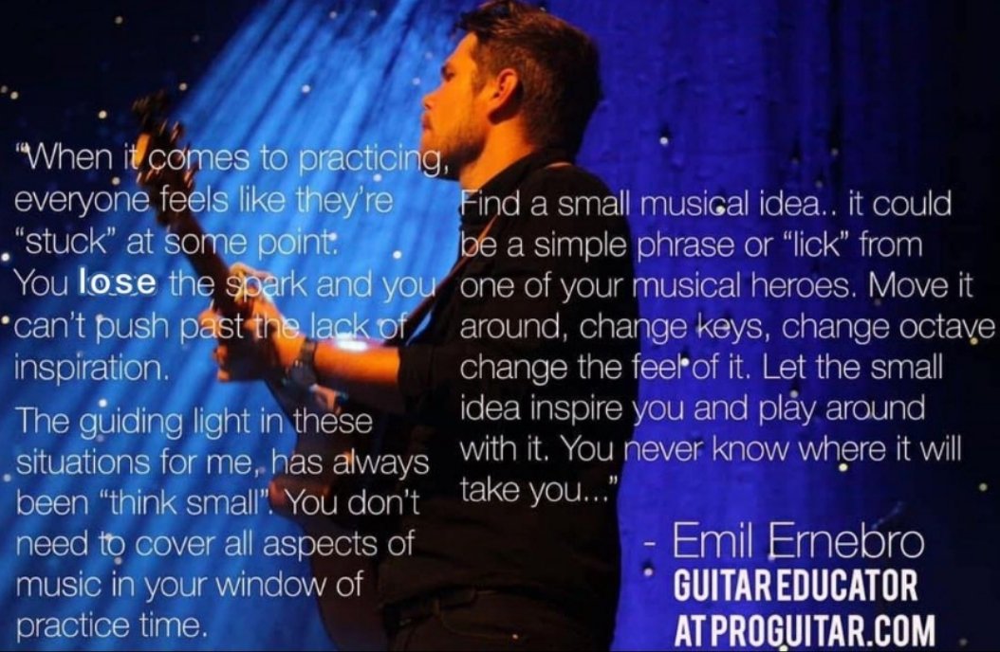

fingerstyle blues level 1-3
- 曲谱: PDF
- 来源: Fingerstyle blues in Pro Guitar
- 我的翻弹
- boom-chick
- 制音
- 三连音的感觉, 声音需要一致
- shuffle
- boom-chick 的音量太大了, 由于自己的手指是没有指甲的, 所以导致 boom-chick 的声音过大, 而旋律音太小
- boom-chick 的声音太过死板, 听 Emil 弹奏的时候, 其实他是专门有区分的, 比如会在强调一下特别的根音部分 【尝试过这样, 但是发现觉得自己弹奏得不够流畅, 经常会导致节奏乱掉】
- 指套和手指混弹的时候不太自然（需要练习 banjo rolling 和 open string lick 技巧）这块在三连音的时候, 问题特别明显
- 扫弦的时候声音太大了. Emil 有很多地方夹杂着很多扫弦+制音的技巧, 我在录音的时候, 发现自己在用指套扫的时候声音特别大, 控制得不好
- Ghost Note 的声音太小了. 音符不够, Ghost Note 来凑, 如果声音太小, 就会少点儿味道
- 分段进行了练习, 开着节拍器进行了慢速练习
- 听了很多遍原曲, 跟着原曲一起演奏, 去找感觉
- 跟着原曲的慢速版本练习了很多遍, 并调整了速度进行练习
- 录音的时候很放松, 分时间进行了录制, 一次录制的时间不超过 40 分钟
- 录音的时候跟着原曲弹/跟着节拍器弹
- 尝试对现有的曲子做一些改编, 改编音符, 节奏, 律动或者 Lick 等
最近学习 Emil 的曲子, 也看了他非常多的视频, 很喜欢他的风格. 发现他常用的技巧包括下面的内容
- Boom Chick
- Open String Lick
- Banjo Rolling
- Harmonic
- Arp + Chord Inversion …
这些都在他的一个视频: FingerStyle Learning 里面有讲, 里面基本上讲述了他对乐理的理解, 技巧的理解等等.
后面我就会在想一个问题, what makes emil emil? 其实这些技巧是其次的, 比这些技巧更难的是, Emil 弹琴时候的放松的感觉, 偶尔拿出一些细节来分析 的话, 很很惊奇地发现他有一些特别的 accent, 比如他自己很常用的 ipm 技巧, 他的强弱感很重, 一些慢速的曲子会弹得很稳, 但是 节奏是流动的(比如 silent night, 他的民谣等等)
他的音乐的音乐性很强, 感染力很强, 无论是慢速的, 还是那种 blues or Jazz.
自己也练了很久的琴了, 有时候也会质疑自己为什么要花这么多时间练琴. 后来也想明白了, 比练琴更重要的是, 是 随便弹弹 时候的愉悦的感觉, 毕竟总得有自己喜欢的东西吧
很喜欢他发在 ins 里面的一句话, 也贴在这里, 勉励一下自己吧

When it comes to praticing, everyone feels like they’re “stuck” at some point. You lose the spark and you can’t push past the lack of inspiration.
The guiding light in these situations for me, has always been “thinking small”. You don’t need to cover all aspects of music in your window of practice time.
Find a small musical idea.. it could be a simple phrase or “link” from one of you musician heroes. Move it around, change keys, change octave change the feel of it. Let the small idea inspire you and play around with it. You never know where it will take you.. - Emil Ernebro